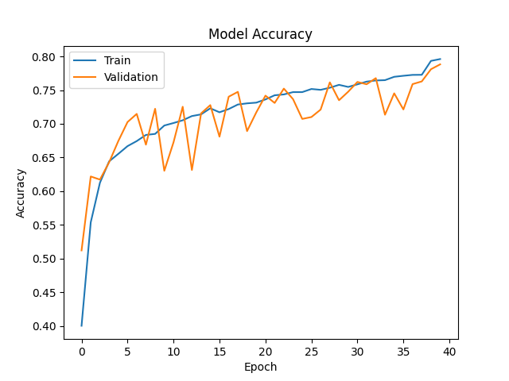
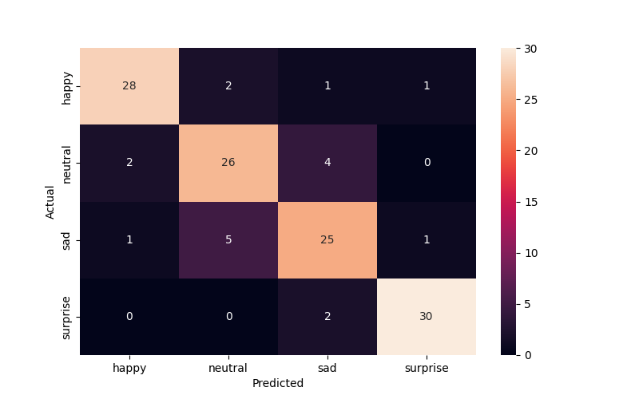

        <html>
        <head><title>Model Summary - 2024-04-10 15:04:59</title></head>
        <body>
        <h1>Model Configuration</h1>
        <pre>model:
  compile:
    learning_rate: 0.001
    optimizer: RMSprop
    optimizer_name: adam
  data:
    color_layers: 1
    color_mode: grayscale
    img_height: 48
    img_width: 48
    use_data_loaders: true
  layers:
  - filters: 64
    kernel_size:
    - 2
    - 2
    padding: same
    type: Conv2D
  - type: BatchNormalization
  - alpha: 0.1
    type: LeakyReLU
  - pool_size:
    - 2
    - 2
    type: MaxPooling2D
  - filters: 128
    kernel_size:
    - 2
    - 2
    padding: same
    type: Conv2D
  - type: BatchNormalization
  - alpha: 0.1
    type: LeakyReLU
  - pool_size:
    - 2
    - 2
    type: MaxPooling2D
  - filters: 256
    kernel_size:
    - 2
    - 2
    padding: same
    type: Conv2D
  - type: BatchNormalization
  - alpha: 0.1
    type: LeakyReLU
  - pool_size:
    - 2
    - 2
    type: MaxPooling2D
  - filters: 512
    kernel_size:
    - 2
    - 2
    padding: same
    type: Conv2D
  - type: BatchNormalization
  - alpha: 0.1
    type: LeakyReLU
  - pool_size:
    - 2
    - 2
    type: MaxPooling2D
  - filters: 128
    kernel_size:
    - 2
    - 2
    padding: same
    type: Conv2D
  - type: BatchNormalization
  - alpha: 0.1
    type: LeakyReLU
  - pool_size:
    - 2
    - 2
    type: MaxPooling2D
  - type: Flatten
  - activation: relu
    type: Dense
    units: 512
  - activation: relu
    type: Dense
    units: 128
  - type: Dense
    units: 64
  - type: BatchNormalization
  - type: ReLU
  - activation: softmax
    type: Dense
    units: 4
  train:
    batch_size: 32
    epochs: 40
    patience: 7
</pre>
        <h1>Model Summary</h1>
        <pre>Model: "sequential"
┏━━━━━━━━━━━━━━━━━━━━━━━━━━━━━━━━━━━━━━┳━━━━━━━━━━━━━━━━━━━━━━━━━━━━━┳━━━━━━━━━━━━━━━━━┓
┃ Layer (type)                         ┃ Output Shape                ┃         Param # ┃
┡━━━━━━━━━━━━━━━━━━━━━━━━━━━━━━━━━━━━━━╇━━━━━━━━━━━━━━━━━━━━━━━━━━━━━╇━━━━━━━━━━━━━━━━━┩
│ conv2d (Conv2D)                      │ (None, 48, 48, 64)          │             320 │
├──────────────────────────────────────┼─────────────────────────────┼─────────────────┤
│ batch_normalization                  │ (None, 48, 48, 64)          │             256 │
│ (BatchNormalization)                 │                             │                 │
├──────────────────────────────────────┼─────────────────────────────┼─────────────────┤
│ leaky_re_lu (LeakyReLU)              │ (None, 48, 48, 64)          │               0 │
├──────────────────────────────────────┼─────────────────────────────┼─────────────────┤
│ max_pooling2d (MaxPooling2D)         │ (None, 24, 24, 64)          │               0 │
├──────────────────────────────────────┼─────────────────────────────┼─────────────────┤
│ conv2d_1 (Conv2D)                    │ (None, 24, 24, 128)         │          32,896 │
├──────────────────────────────────────┼─────────────────────────────┼─────────────────┤
│ batch_normalization_1                │ (None, 24, 24, 128)         │             512 │
│ (BatchNormalization)                 │                             │                 │
├──────────────────────────────────────┼─────────────────────────────┼─────────────────┤
│ leaky_re_lu_1 (LeakyReLU)            │ (None, 24, 24, 128)         │               0 │
├──────────────────────────────────────┼─────────────────────────────┼─────────────────┤
│ max_pooling2d_1 (MaxPooling2D)       │ (None, 12, 12, 128)         │               0 │
├──────────────────────────────────────┼─────────────────────────────┼─────────────────┤
│ conv2d_2 (Conv2D)                    │ (None, 12, 12, 256)         │         131,328 │
├──────────────────────────────────────┼─────────────────────────────┼─────────────────┤
│ batch_normalization_2                │ (None, 12, 12, 256)         │           1,024 │
│ (BatchNormalization)                 │                             │                 │
├──────────────────────────────────────┼─────────────────────────────┼─────────────────┤
│ leaky_re_lu_2 (LeakyReLU)            │ (None, 12, 12, 256)         │               0 │
├──────────────────────────────────────┼─────────────────────────────┼─────────────────┤
│ max_pooling2d_2 (MaxPooling2D)       │ (None, 6, 6, 256)           │               0 │
├──────────────────────────────────────┼─────────────────────────────┼─────────────────┤
│ conv2d_3 (Conv2D)                    │ (None, 6, 6, 512)           │         524,800 │
├──────────────────────────────────────┼─────────────────────────────┼─────────────────┤
│ batch_normalization_3                │ (None, 6, 6, 512)           │           2,048 │
│ (BatchNormalization)                 │                             │                 │
├──────────────────────────────────────┼─────────────────────────────┼─────────────────┤
│ leaky_re_lu_3 (LeakyReLU)            │ (None, 6, 6, 512)           │               0 │
├──────────────────────────────────────┼─────────────────────────────┼─────────────────┤
│ max_pooling2d_3 (MaxPooling2D)       │ (None, 3, 3, 512)           │               0 │
├──────────────────────────────────────┼─────────────────────────────┼─────────────────┤
│ conv2d_4 (Conv2D)                    │ (None, 3, 3, 128)           │         262,272 │
├──────────────────────────────────────┼─────────────────────────────┼─────────────────┤
│ batch_normalization_4                │ (None, 3, 3, 128)           │             512 │
│ (BatchNormalization)                 │                             │                 │
├──────────────────────────────────────┼─────────────────────────────┼─────────────────┤
│ leaky_re_lu_4 (LeakyReLU)            │ (None, 3, 3, 128)           │               0 │
├──────────────────────────────────────┼─────────────────────────────┼─────────────────┤
│ max_pooling2d_4 (MaxPooling2D)       │ (None, 1, 1, 128)           │               0 │
├──────────────────────────────────────┼─────────────────────────────┼─────────────────┤
│ flatten (Flatten)                    │ (None, 128)                 │               0 │
├──────────────────────────────────────┼─────────────────────────────┼─────────────────┤
│ dense (Dense)                        │ (None, 512)                 │          66,048 │
├──────────────────────────────────────┼─────────────────────────────┼─────────────────┤
│ dense_1 (Dense)                      │ (None, 128)                 │          65,664 │
├──────────────────────────────────────┼─────────────────────────────┼─────────────────┤
│ dense_2 (Dense)                      │ (None, 64)                  │           8,256 │
├──────────────────────────────────────┼─────────────────────────────┼─────────────────┤
│ batch_normalization_5                │ (None, 64)                  │             256 │
│ (BatchNormalization)                 │                             │                 │
├──────────────────────────────────────┼─────────────────────────────┼─────────────────┤
│ re_lu (ReLU)                         │ (None, 64)                  │               0 │
├──────────────────────────────────────┼─────────────────────────────┼─────────────────┤
│ dense_3 (Dense)                      │ (None, 4)                   │             260 │
└──────────────────────────────────────┴─────────────────────────────┴─────────────────┘
 Total params: 1,096,452 (4.18 MB)
 Trainable params: 1,094,148 (4.17 MB)
 Non-trainable params: 2,304 (9.00 KB)
</pre>
        <h2>Test Accuracy</h2>
        <p>
1/4 ━━━━━━━━━━━━━━━━━━━━ 0s 17ms/step - accuracy: 0.8750 - loss: 0.3440
4/4 ━━━━━━━━━━━━━━━━━━━━ 0s 4ms/step - accuracy: 0.8490 - loss: 0.4451 

1/4 ━━━━━━━━━━━━━━━━━━━━ 1s 419ms/step
4/4 ━━━━━━━━━━━━━━━━━━━━ 0s 4ms/step  
</p>
        <h2>Accuracy Plot</h2>
        
        <h2>Classification Report</h2>
        <pre>              precision    recall  f1-score   support

       happy       0.90      0.88      0.89        32
     neutral       0.79      0.81      0.80        32
         sad       0.78      0.78      0.78        32
    surprise       0.94      0.94      0.94        32

    accuracy                           0.85       128
   macro avg       0.85      0.85      0.85       128
weighted avg       0.85      0.85      0.85       128

</pre>
        <h2>History</h2>
        <pre>Epoch 1: accuracy: 0.4004, loss: 1.2624, val_accuracy: 0.5122, val_loss: 1.1455, learning_rate: 0.0010
Epoch 2: accuracy: 0.5538, loss: 1.0296, val_accuracy: 0.6219, val_loss: 0.9054, learning_rate: 0.0010
Epoch 3: accuracy: 0.6126, loss: 0.9151, val_accuracy: 0.6172, val_loss: 0.9207, learning_rate: 0.0010
Epoch 4: accuracy: 0.6443, loss: 0.8545, val_accuracy: 0.6430, val_loss: 0.8772, learning_rate: 0.0010
Epoch 5: accuracy: 0.6554, loss: 0.8211, val_accuracy: 0.6745, val_loss: 0.8081, learning_rate: 0.0010
Epoch 6: accuracy: 0.6669, loss: 0.8011, val_accuracy: 0.7026, val_loss: 0.7353, learning_rate: 0.0010
Epoch 7: accuracy: 0.6744, loss: 0.7878, val_accuracy: 0.7147, val_loss: 0.6815, learning_rate: 0.0010
Epoch 8: accuracy: 0.6835, loss: 0.7638, val_accuracy: 0.6691, val_loss: 0.8535, learning_rate: 0.0010
Epoch 9: accuracy: 0.6850, loss: 0.7555, val_accuracy: 0.7223, val_loss: 0.7068, learning_rate: 0.0010
Epoch 10: accuracy: 0.6975, loss: 0.7338, val_accuracy: 0.6303, val_loss: 0.9038, learning_rate: 0.0010
Epoch 11: accuracy: 0.7012, loss: 0.7288, val_accuracy: 0.6725, val_loss: 0.8719, learning_rate: 0.0010
Epoch 12: accuracy: 0.7052, loss: 0.7242, val_accuracy: 0.7253, val_loss: 0.6739, learning_rate: 0.0010
Epoch 13: accuracy: 0.7115, loss: 0.7072, val_accuracy: 0.6315, val_loss: 0.9748, learning_rate: 0.0010
Epoch 14: accuracy: 0.7140, loss: 0.7011, val_accuracy: 0.7155, val_loss: 0.6720, learning_rate: 0.0010
Epoch 15: accuracy: 0.7230, loss: 0.6794, val_accuracy: 0.7277, val_loss: 0.6891, learning_rate: 0.0010
Epoch 16: accuracy: 0.7171, loss: 0.6887, val_accuracy: 0.6809, val_loss: 0.8622, learning_rate: 0.0010
Epoch 17: accuracy: 0.7219, loss: 0.6776, val_accuracy: 0.7402, val_loss: 0.6626, learning_rate: 0.0010
Epoch 18: accuracy: 0.7286, loss: 0.6700, val_accuracy: 0.7474, val_loss: 0.6248, learning_rate: 0.0010
Epoch 19: accuracy: 0.7304, loss: 0.6639, val_accuracy: 0.6892, val_loss: 0.7864, learning_rate: 0.0010
Epoch 20: accuracy: 0.7314, loss: 0.6551, val_accuracy: 0.7169, val_loss: 0.6723, learning_rate: 0.0010
Epoch 21: accuracy: 0.7362, loss: 0.6505, val_accuracy: 0.7418, val_loss: 0.6404, learning_rate: 0.0010
Epoch 22: accuracy: 0.7423, loss: 0.6311, val_accuracy: 0.7310, val_loss: 0.6633, learning_rate: 0.0010
Epoch 23: accuracy: 0.7436, loss: 0.6332, val_accuracy: 0.7523, val_loss: 0.6070, learning_rate: 0.0010
Epoch 24: accuracy: 0.7470, loss: 0.6300, val_accuracy: 0.7366, val_loss: 0.6431, learning_rate: 0.0010
Epoch 25: accuracy: 0.7470, loss: 0.6251, val_accuracy: 0.7073, val_loss: 0.7440, learning_rate: 0.0010
Epoch 26: accuracy: 0.7517, loss: 0.6234, val_accuracy: 0.7101, val_loss: 0.6988, learning_rate: 0.0010
Epoch 27: accuracy: 0.7504, loss: 0.6177, val_accuracy: 0.7211, val_loss: 0.6863, learning_rate: 0.0010
Epoch 28: accuracy: 0.7535, loss: 0.6066, val_accuracy: 0.7615, val_loss: 0.6060, learning_rate: 0.0010
Epoch 29: accuracy: 0.7578, loss: 0.5986, val_accuracy: 0.7350, val_loss: 0.6784, learning_rate: 0.0010
Epoch 30: accuracy: 0.7547, loss: 0.6067, val_accuracy: 0.7476, val_loss: 0.6307, learning_rate: 0.0010
Epoch 31: accuracy: 0.7586, loss: 0.5970, val_accuracy: 0.7621, val_loss: 0.6023, learning_rate: 0.0010
Epoch 32: accuracy: 0.7626, loss: 0.5893, val_accuracy: 0.7587, val_loss: 0.6208, learning_rate: 0.0010
Epoch 33: accuracy: 0.7643, loss: 0.5864, val_accuracy: 0.7677, val_loss: 0.5849, learning_rate: 0.0010
Epoch 34: accuracy: 0.7648, loss: 0.5857, val_accuracy: 0.7135, val_loss: 0.7097, learning_rate: 0.0010
Epoch 35: accuracy: 0.7697, loss: 0.5765, val_accuracy: 0.7452, val_loss: 0.6460, learning_rate: 0.0010
Epoch 36: accuracy: 0.7713, loss: 0.5734, val_accuracy: 0.7213, val_loss: 0.6859, learning_rate: 0.0010
Epoch 37: accuracy: 0.7726, loss: 0.5659, val_accuracy: 0.7589, val_loss: 0.6150, learning_rate: 0.0010
Epoch 38: accuracy: 0.7727, loss: 0.5646, val_accuracy: 0.7629, val_loss: 0.6214, learning_rate: 0.0010
Epoch 39: accuracy: 0.7934, loss: 0.5206, val_accuracy: 0.7810, val_loss: 0.5593, learning_rate: 0.0002
Epoch 40: accuracy: 0.7961, loss: 0.5123, val_accuracy: 0.7882, val_loss: 0.5506, learning_rate: 0.0002
</pre>
        <h2>Confusion Matrix</h2>
        
        <h2>Predicted Images</h2>
        
        </body>
        </html>
        